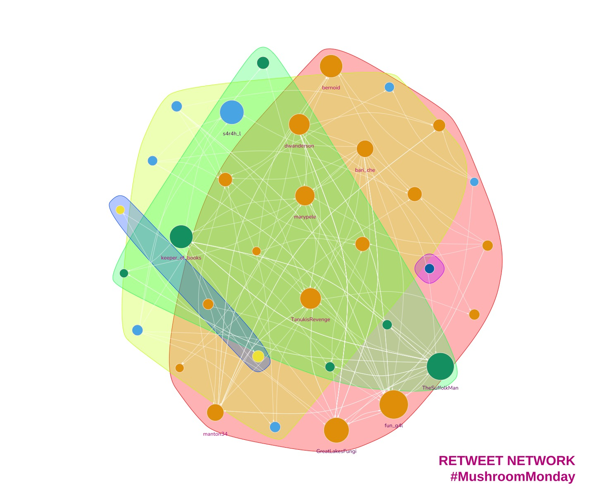
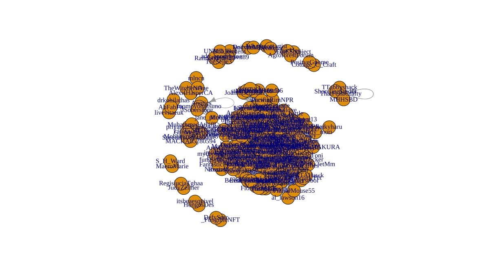
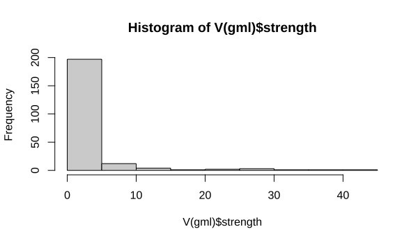
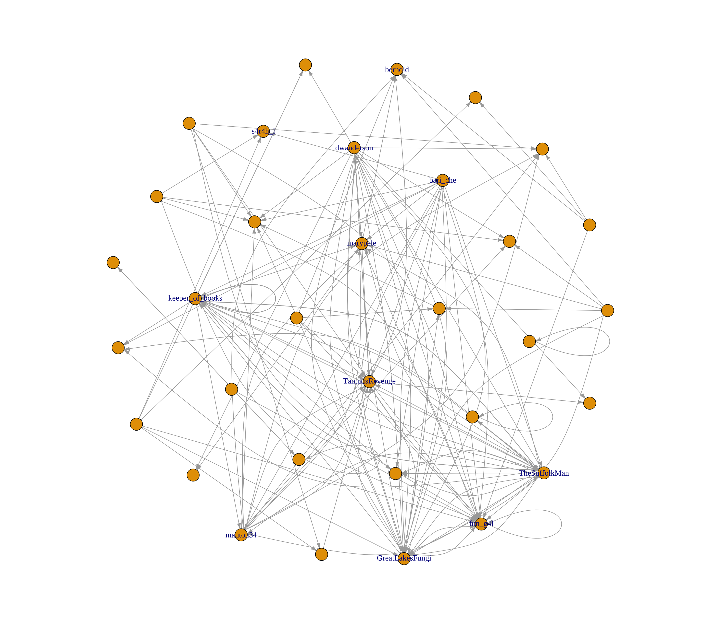
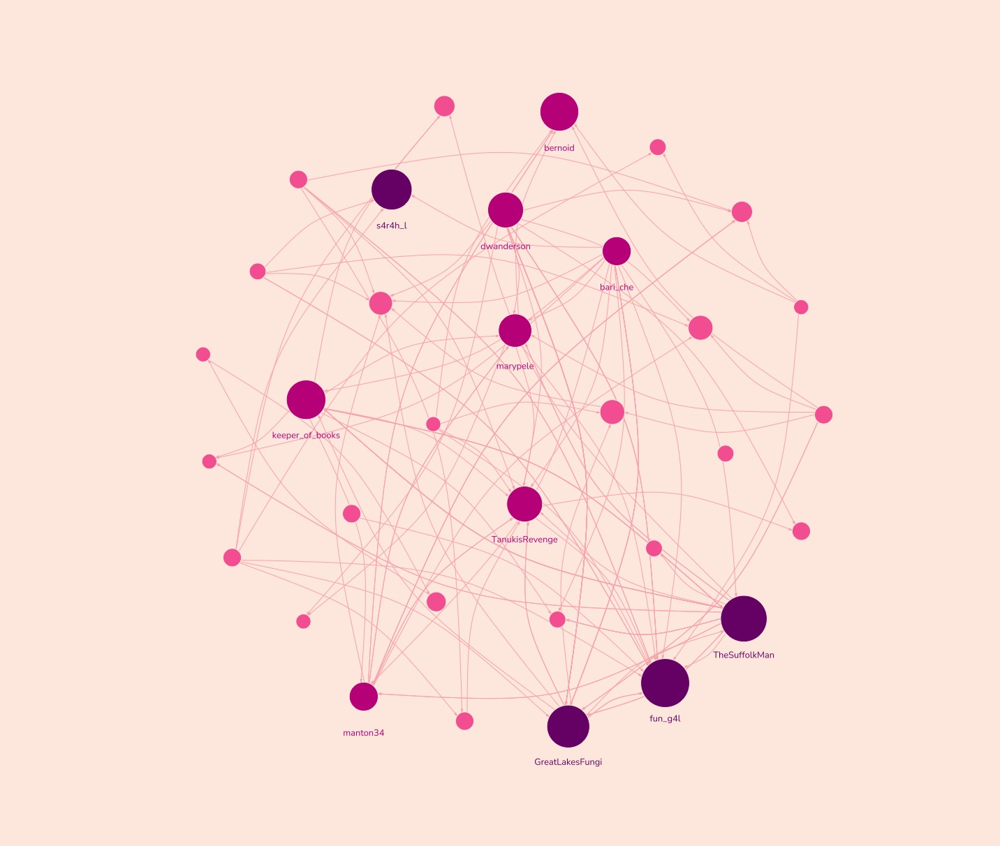

library(rtweet)
library(igraph)
What is a Network Graph?
Are you curious about how information spreads on Twitter? Network analysis and visualisation tools can help us understand how social relationships work online and how communities interact. By analysing internet communities such as Twitter, we can gain insight into how information is shared between users and who the key influencers are. A network graph is a visual representation of this information flow between users.
Visualising the flow of information between users can help you identify key influencers in your industry and understand how your target audience interacts with your brand. By using network analysis and visualisation, you can gain valuable insights into your social media strategy and make data-driven decisions to increase engagement and drive traffic to your website.
In network analysis, two important terms to know are ‘Vertices’ (or nodes) and ‘Edges’. Vertices represent Twitter users in this example, while edges show the relationship between users who are retweeting and being retweeted. Understanding these terms can help you better understand your online presence and identify opportunities to grow your business.
For example, if you are a small business owner looking to increase your online presence, network analysis can help you identify other users in your industry who are highly engaged and have a large following. By connecting with these key influencers and building relationships, you can expand your reach and attract new customers to your business.
Key terminology
Two key terms to understand are ‘Vertices’ and ‘Edges’.
- Vertices
-
Also called ‘nodes’. In the example that follows, a vertex is a Twitter user.
- Edges
-
A pair relationship between two vertices. In this example our edges show who is being retweeted and by whom.
Twitter retweet network example
Before I visualise a network I consider the context and requirements. For example, do I want to:
Assign colours to vertices based on some node attributes?
Set the vertex size as a function of some attributes?
Show all vertices?
Deciding these answers early on saves time later.
I’m going to demonstrate creating a network graph using the Twitter hashtag #MushroomMonday. It’s a fine tag to follow. One of the finest. Lots of photos of fungi in all their splendour. And yes, fungi can be very varied just like the Twitter accounts that post mushroom content.
I’ll show that early on in the visualising process my graphs are usually messy. I think that’s normal because it’s normal for me. And because I’ve already decided I will eliminate some vertices then colour and resize the remainder, it’s a fairly straightforward approach.
My method here is not the most straightforward. I use it to get a grasp on the network and the data in it. As ever, there’s more than one way to achieve a goal.
1. The setup
Obligatory libraries…
The very first thing to do is authorise rtweet to fetch tweets for you. The Twitter API is now available at a cost even if you only wish to read tweets. I know, I know, but what can we do?
Luckily for me I saved the data for this particular graph earlier1, so I bypass the need for rtweet and paying for API usage. I load it here.
# The Twitter API is no longer allowing free access to read tweets.
# If you've a paid up developer account you can use the search_tweets function like so...
#
# twts <- search_tweets("#MushroomMonday", n = 1000, include_rts = TRUE)
#
# Otherwise you'll need to count on a file of graph you've saved previously.
# Like I did.
gml <- read_graph("./mushroommonday.graphml", format = "graphml")Let’s check the output then I’ll explain.
A quick look at the edges…
> edge_attr(gml)
$type
[1] "mention" "mention" "mention" "mention" "mention" "mention" "mention" "mention" "mention" "mention" "mention" "mention"
[13] "mention" "mention" "mention" "mention" "mention" "mention" "mention" "mention" "mention" and vertices…
> vertex_attr(gml)
$id
[1] "72819944" "1447502319944454148" "1430641982880239617" "36879139" "1506195335579938818"
[6] "1407036811151556613" "2354121475" "2216026806" "1450456500418367490" "16872011"
$name
[1] "bernoid" "ada_apocalypse" "ThatFellaCrafty" "marypele" "Cottage_C_Craft" "LizLouise12"
[7] "coachmegjade" "PacificRimNPR" "LukesMushrooms" "LGTrombatore" "fun_g4l" "Whatknotsartist"
[13] "LX8111" "MacroMarie" "GreatLakesFungi" "TanukisRevenge" "muscariamadge" "ray_rambling"
[19] "TheSuffolkMan" "keeper_of_books" "BobJoostens" "TheWitchersOne" "
Above is a list of edges and vertices. The edges represent the connections between Twitter users and the vertices represent the users themselves. The ‘mention’ type indicates that the connection is, you guessed it, a mention.
We can use this data to create a graph or visual representation of the connections. However, at the moment, the output does not provide much useful information.
I’ll try a quick plot.
2. First plot is the messiest. Always.
set.seed(127926)
plot(gml, layout = layout.fruchterman.reingold)Hmmm. Not pretty.

The plot is crowded and I can’t read the labels. The vertices (circles) have a name attribute which is the user’s Twitter handle. Every vertex is the same size and colour. The edges (connections between circles) are hidden in the general melee.
This plot doesn’t convey any information at all.
It’s useless.
I’ll change all that now.
I’ll start by filtering out the replies and mentions. Retweets only beyond this point.
# Keep only retweets
gml <- gml - E(gml)[E(gml)$type == "retweet"]And locate the vertices with the most edges by assigning each edge a weight and summing the weights for each vertex.
# Find out who has the most edges
## Set a default edge weight
E(gml)$weight <- 1
## Calculate the strength of each vertex
V(gml)$strength <- strength(
gml,
vids = V(gml),
mode = "total",
loops = TRUE,
weights = NULL
)Users that have had tweets retweeted the most have the highest values for strength.
# > V(gml)$strength
# [1] 54 9 10 36 2 2 3 2 8 2 83 2 6 2 63 46 16 18 49 34 1 2 8 2 1 12 2 2 6 2 22 2 6 3 2 21 2 12 12 58 4 20 12 16 10 4 7> hist(V(gml)$strength)
There’s quite a mixture of strength values here and I’m only interested in the strongest nodes.
# Remove vertices that do not meet the mean strength value
# - Create a subgraph of vertices that don't meet threshold strength
gmls <- subgraph(gml, which(V(gml)$strength >= mean(V(gml)$strength)))
# remove isolated vertices (with no edges)
isolated = which(degree(gmls, mode = "total")==0)
gmls = delete.vertices(gmls, isolated)And I can keep labels only for those who are the highest performing vertices. It may mean that there are some unlabelled nodes but that shouldn’t be a problem because they’re not important.
# Keep labels only for vertices with the highest strength
V(gmls)$label <- ifelse(V(gmls)$strength > 14, V(gmls)$name, NA)It would be useful to sneak a quick peek at what I’m left with. I’m using a force-directed layout and I’d like to have some space between vertices. First things first, I’ll reset the edge weights to a very small value. Since the edge weights are the force responsible for holding the vertices together, a smaller weight should give me what I’m after.
# Reset edge weights to spread out the graph
E(gmls)$weight <- E(gmls)$weight/100000
# Plot for another look-see
set.seed(127926)
plot(gmls,
layout = layout.fruchterman.reingold,
vertex.size = 5,
edge.arrow.size = 0.25)
3. Changing vertex size and colour
I can work with the graph above. It’s time to start making the plot presentable.
I’ll change the vertex size as a function of strength. The higher the vertex’s strength, the larger it will be.
Colour is also vital now. I pick a palette using the RColorBrewer library and choose one that I think is close to the colours of Turkey Tail mushrooms. I think the folks in #MushroomMonday would like it.
# Now we're close. Let's change the vertex size depending on strength and add colour.
# Vertex size will indicate the amount of retweets by other users, it will be a function of strength.
library(RColorBrewer)
col <- brewer.pal(5, "RdPu")for(v in V(gmls)){
# Colour from light to dark
if (V(gmls)$strength[v] < 15){
V(gmls)$s_class[v] <- 3
} else if (V(gmls)$strength[v] < 30){
V(gmls)$s_class[v] <- 4
} else
V(gmls)$s_class[v] <- 5
}set.seed(127926)
plot(gmls,
layout = layout.fruchterman.reingold,
vertex.label = V(gmls)$label,
vertex.label.color = col[V(gmls)$s_class],
vertex.label.cex=0.8,
vertex.label.dist = -1.6,
vertex.label.degree = -pi/2,
vertex.size = sqrt(V(gmls)$strength)*2.4,
vertex.color = col[V(gmls)$s_class],
vertex.frame.color = col[1],
edge.curved = 0.3,
edge.arrow.size = 0.25,
edge.color = col[2])
OK, so it’s more ‘fairy princess’ than Turkey Tail but it tells a story. The users who are retweeted more than most are are the darkest purple, while the weakest nodes - those with lower values of `strength` are smaller, pinker and unlabelled.
If I wanted my tweets to be noticed by others I’d hope that they were retweeted by one of the stronger accounts.
Trouble is that hope really doesn’t get you anywhere.
4. Visualising cliques and communities
So how can you increase your chances of being noticed? You might be wondering which accounts to follow and engage with. You could follow all of the accounts, sure. But Twitter penalises tweets from accounts with a high following:follower ratio, so you need to be selective. Which accounts will get you the biggest return on investment then?
Let’s look at the communities.
Users in the same cluster, or clique, are more connected with one another that users outside of the cluster. This will tell me if there are divisions due to different types of account. Users in the same cluster, or clique, tend to be more connected to each other than to users outside the cluster. This can help to identify accounts that are interested in similar topics or have similar needs. Put another way in our fungi example, there may be accounts that prefer scientific data and accounts that prefer photographic content. This info shows up in separate clusters.
A small tweak to my graph and I notice that there is a split between the interesting accounts.
Take a look for yourself below. The nodes are now coloured according to the clusters they belong to. Green, orange and blue nodes are in different clusters. Our strong accounts are now split three ways. I would go on to check the content of these communities and determine which accounts are more suited for my client.
5. Conclusion
a. What improvements would I make to the code?
Graphs that are more cluttered often benefit from an interactive visualisation or application. This isn’t one of them. This is such a simple example I probably won’t make any adjustments of note.
In order to demonstrate the most basic concepts of network graphs I’ve steered clear of using coreness and plotting k-core. I’d normally use those myself instead of summing vertex strength but either approach works.
YMMV.
b. How should I interpret this graph for my client?
Opinions are like.. well, never mind. Here’s mine. The graph informs us that:
- There are multiple strong accounts that will be worth pursuing as influencers
- Those accounts are in different clusters
- The cluster with content most similar to the client’s is likely to have followers with similar interests
- To gain engagement, the followers of the cluster’s main account(s) should be followed to engage with our content
All in all this has been a worthwhile exercise to save tweeting into the void.
Footnotes
If you’d like example data to practice on you can download a dataset from Stanford University’s SNAP.↩︎